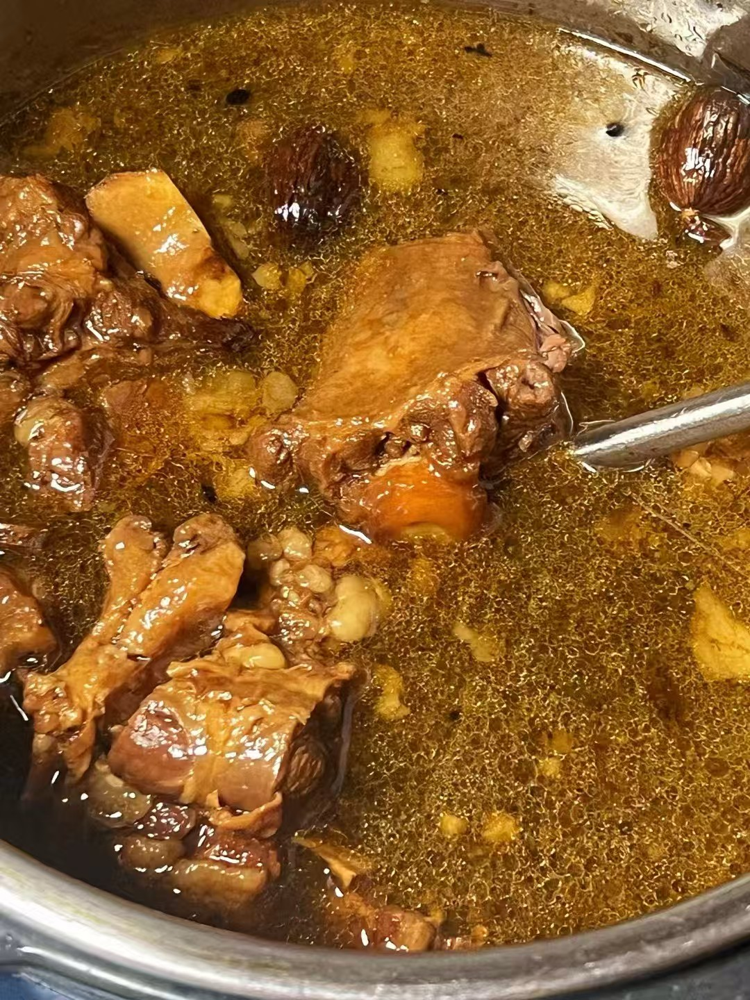
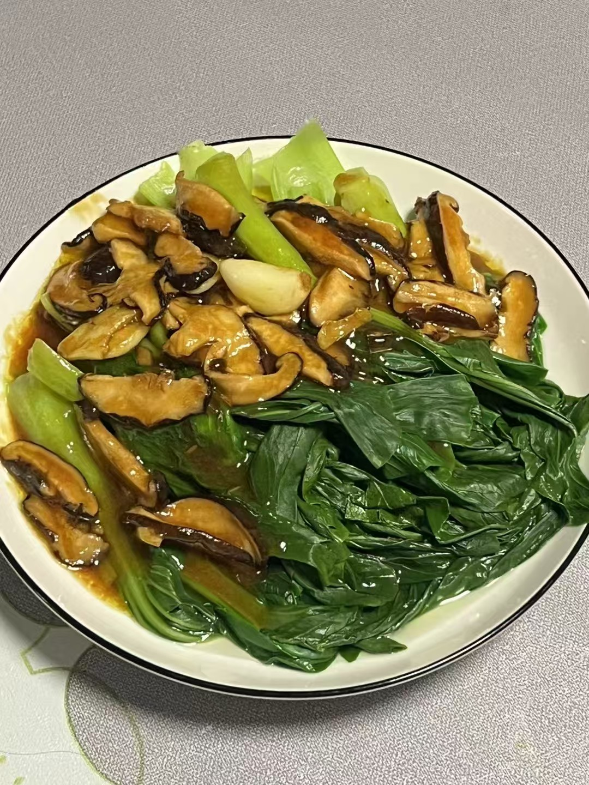
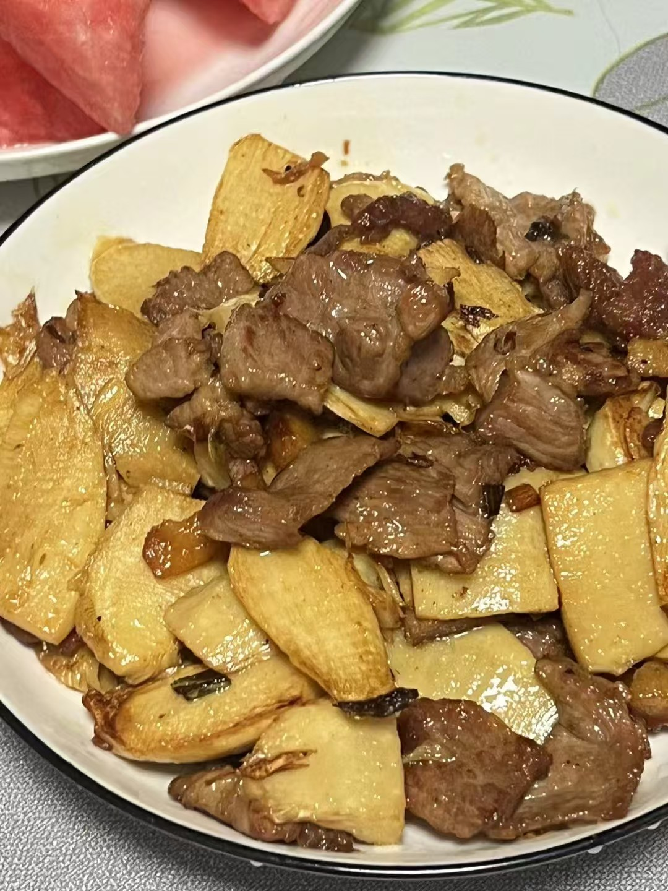

01
AI CAREER AGENT · 2025
简职
AI 职业导师
把碎片化的求职动作，收束为一份职业档案与一个懂你的 AI 导师。
- 角色
- 联合创始人 · 品牌与增长
- 结果
- 400+ 种子用户 · 20 名校园大使
- 荣誉
- AI Agent 2025 优秀00后开发者
PROFILE / 关于
除了研发，其他都做：从软件到硬件，从产品到职能。
SELECTED WORK / 作品
5 PROJECTS
AI CAREER AGENT · 2025
把碎片化的求职动作，收束为一份职业档案与一个懂你的 AI 导师。
HARDWARE INNOVATION · 2025
让显卡离开主板正面：用结构重排换取散热、扩展与鲜明的视觉识别。
EMOTIONAL WEARABLE · 2025
将情绪识别、骨传导与首饰设计结合，让佩戴物成为人与内在世界的连接。
GROWTH INTELLIGENCE · 2026
统一曝光、点击、到站、注册与线索口径，让增长问题可以被追踪和决策。
AI-NATIVE WORKSPACE · 2026
让 AI 不只回答问题，而是理解组织、流程、数据与权限上下文的工作台代理。
EXPERIENCE / 经历
我的职业路径持续靠近同一个问题：怎样把想法推进为真实结果。
AI 产品与增长策略，推进企业工作流AI化，拓展FDE合作项目。
支持 Vibe Coding、Kimi Claw、高级 Agent、增长工程等核心技术团队招聘，并参与招聘自动化 Agent 建设。
搭建品牌与内容体系，完成零投放冷启动及跨国高校校园增长网络。
统筹硬件项目从方案设计、主板打样到量产准备，并推进融资与外部资源合作。
University of the Arts London
OFFLINE MODE / 生活
01 / GUITAR & NOISE
02 / HOME COOKING
认真对待时令与火候。想当厨子的念头，并没有真的消失。



03 / ABSURD MOVING IMAGE
策划、表演与剪辑，把互联网情绪压缩成几秒钟的荒诞影像。
RECOGNITION / 荣誉
OPEN FOR CONVERSATION
创业 / 私募基金 / 增长策略 / 品牌与资源合作
WECHAT PUBLIC ACCOUNT 扫码关注个人公众号 打开大图 ↗